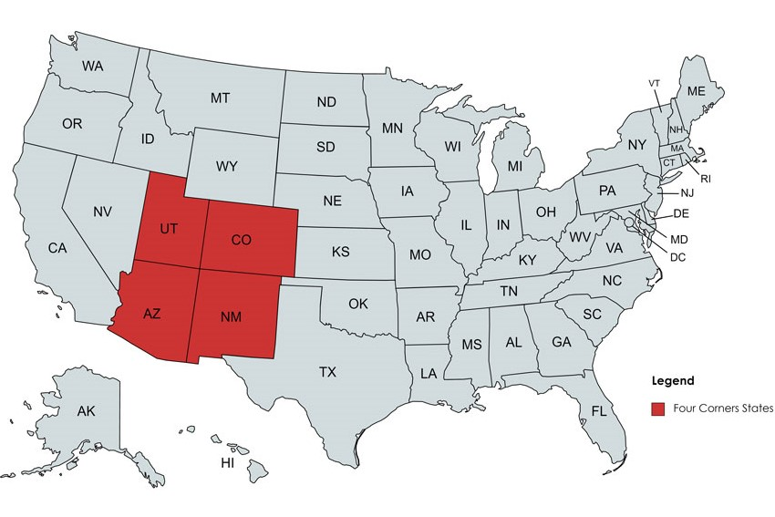
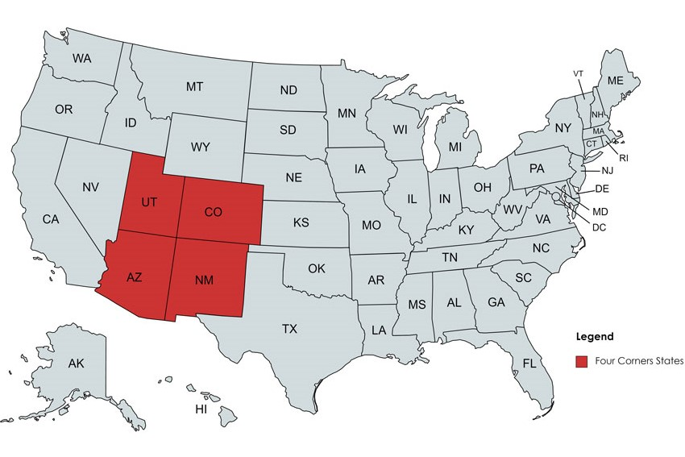

What and why the four corners region?
What is this region? This is the only spot in the entirety of the United States where the corners of four different states meet each other at a single point: Colorado, Utah, Arizona, and New Mexico. At the intersection of these states, at the southwestern-most part of Colorado, is the Four Corners Monument. The monument is currently a bronze disk embedded in granite where you can stand in all four states at once!
Top Destinations in Each State

Arizona:
Grand Canyon
Extensive canyon system cut by the Colorado River, averaging 4,000ft deep for its entire 277 miles.
- Great hiking for all skill levels
- Check where reservations are necessary before going
- Bring proper gear & plenty of water

Colorado:
Rocky Mountains
Extends 3,000mi through the Western U.S. and Canada. Highest peak = 14,433ft
- Reserve your permit! There is currently a timed entry permit system to limit # of people allowed into the park
- Book early - this is a very popular park
- Prepare for elevation gain; start slowly
New Mexico:
White Sands National Park
Largest gypsum dune field in the world! Located in Southern New Mexico.
- Bring your own sled üõ∑
- Check the website or call ahead before you go in case of road closures
- If visiting during summer, be prepared for the heat - bring strong sunscreen, hat, sunglasses, & plenty of water

Utah:
Zion National Park
Within its 232 square miles are high plateaus, a maze of narro, deep, sandstone canyons, and the Virgin River.
- You may need to book certain trails in advance. Check well ahead of time
- Go early to park at the Visitor Center & avoid long shuttle lines
- Always check the website ahead of time for updates on closures and rock falls